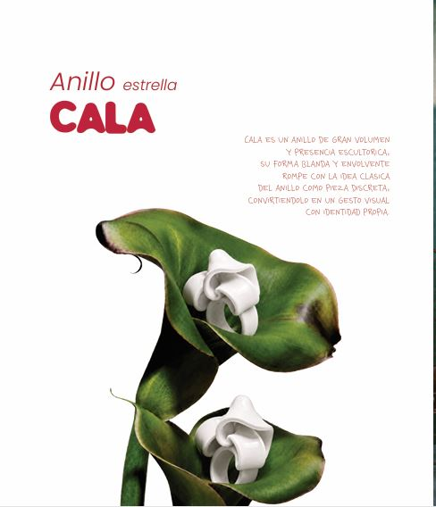
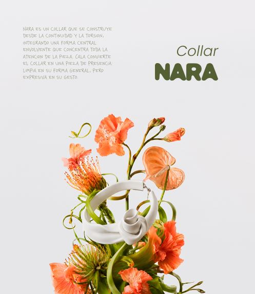
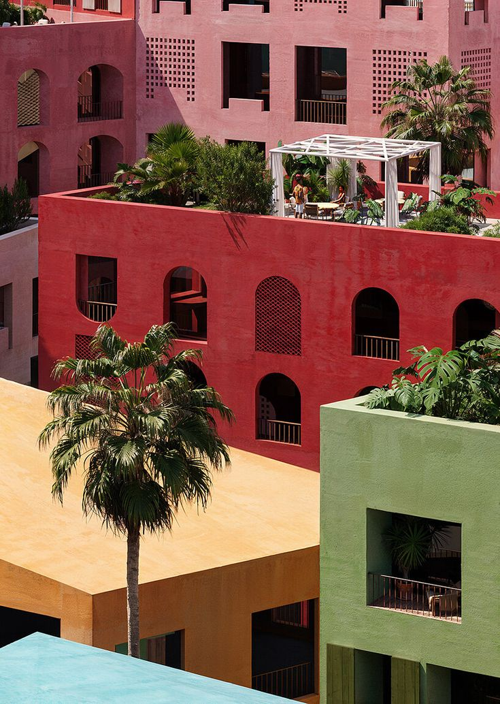

00 / Spot publicitario
Antes de explicar
moldoLab,
míralo.
El proyecto se presenta primero desde la atmósfera, el cuerpo y la presencia visual. El spot funciona como entrada al universo de la marca antes del desarrollo conceptual.
Trabajo Final de Grado · Diseño Gráfico · 2026
MOLDOLab
Joyas experimentales para cuerpos contemporáneos.
Una marca que no nace para adornar, sino para expresar identidad.
Joyería alternativa construida desde la forma, la materia y la presencia.

01 / Origen
Cuando todo empieza
a parecerse demasiado
moldoLab nace de observar un entorno visual donde muchas piezas y tendencias empiezan a parecerse entre sí. El proyecto propone una joyería experimental que entiende la pieza como una forma de identidad, no como un simple accesorio.
"No buscamos piezas
que combinen con todo.
Buscamos piezas que digan algo."
01 / Problema
La joyería tradicional
Continúa asociada al lujo material, al valor económico y a los códigos clásicos.
02 / Oportunidad
El nuevo público
Jóvenes y creativos buscan objetos que comuniquen actitud, estética propia y pertenencia visual.
03 / Respuesta
moldoLab
Polímeros flexibles, formas orgánicas y narrativa gráfica para piezas con presencia.
02 / Investigación
De la joya
como objeto a la joya
como lenguaje
La joyería nunca ha sido solo decorativa. Ha funcionado como símbolo, archivo emocional y forma de representación. moldoLab traslada esa lectura al contexto contemporáneo.
El polímero no es un sustituto del material noble — es un recurso expresivo con valor propio.
03 / Concepto de marca
No está hecho para encajar
moldoLab es una marca de joyería contemporánea que utiliza materiales plásticos y polímeros como recurso expresivo. El foco está en la forma, el volumen, la actitud y la identidad visual.
La pieza no se entiende como adorno, sino como gesto visual. Una extensión de quien la lleva.
↓ Identidad verbal04 / Identidad verbal
La marca habla como piensa
Evita el tono neutro y correcto. Habla desde una voz directa, sensorial y cercana, con un punto de provocación. No busca convencer a todos: busca conectar con quien entiende su universo.
"No sabes por qué te gusta.
Sabes que es tuyo."
"No seguimos tendencias.
Las usamos, las mezclamos...
o las ignoramos."
"Lo imperfecto tiene personalidad.
Y la personalidad siempre gana."
"No todo el mundo lo entiende.
Y no pasa nada."
"El material no define el valor.
Lo que vale es lo que transmite."
Explorador
Busca, prueba y expande límites sin pedir permiso.
Villano
Rompe el canon y desafía lo establecido desde dentro.
Amante
Conecta desde lo sensorial, lo emocional y lo deseable.
05 / Identidad visual
Un sistema blando,
claro y reconocible
Logotipo
Parte de la idea de molde, pero invierte su significado. No es repetición ni límite, sino punto de partida para romper la forma.
Sistema cromático
El color no es una norma cerrada, sino recurso expresivo. Ordena el universo visual sin limitar su evolución.
Sistema tipográfico
moldoLab
MoldoRegular — Logotipo, titulares de impacto
POPPINS BOLD
Poppins — Estructura, navegación, cuerpo
Casual Human · esto no es para todos
CasualHuman — Notas, etiquetas, tono cercano
MOLDO
Lab
Sistema gráfico — composiciones editoriales, frases directas, gran presencia
06 / Colección SS·26
Cinco piezas.
Una misma actitud.
Dos anillos, un collar, un brazalete y unos pendientes. Todas trabajan desde el volumen, el gesto, la fluidez y la presencia escultórica.

Anillo estrella · 45€
CALA
Gran volumen y presencia escultórica. Su forma blanda y envolvente rompe con la idea clásica del anillo como pieza discreta.
— volumen

Collar · 96€
NARA
Construido desde la continuidad y la torsión. Su forma central envolvente convierte el collar en una declaración limpia pero expresiva.
— torsión

Brazalete · 53€
ORA
Forma amplia y envolvente definida por un recorrido fluido que parece plegarse sobre sí mismo. Volumen, continuidad y equilibrio.
— continuidad

Pendientes · 45€
SIRA
Volumen compacto y carácter escultórico. Pliegues entrelazados que generan una forma cerrada, densa y expresiva.
— presencia

Anillo · 45€
LUA
Trabaja desde la curva, el brillo y la sensación de fluidez. Apariencia suave pero gran impacto visual.
— brillo
"No son piezas para encajar. Son piezas para reconocerse."
↓ Material y proceso07 / Material y proceso
El material no
define el valor
Polímeros flexibles: ligereza, volumen, comodidad y libertad para crear formas alejadas de la joyería tradicional. No precioso, pero sí valioso.
Proceso creativo

08 / Dirección de arte
Luxury in the Ordinary
El lujo no es perfección. Es presencia dentro de lo cotidiano.
La campaña sitúa las piezas en escenas cálidas, urbanas y sensoriales. La joya no aparece aislada: se integra en una escena viva, cotidiana y sensorial donde cuerpo, objeto y entorno construyen una misma narrativa.
Secuencia visual · 12 fotografías
09 / Cartelería de campaña
Tres frases.
Una misma actitud.
La cartelería traduce el tono verbal de la marca a piezas gráficas directas y reconocibles. Los carteles no explican la marca: la lanzan.
01 Formas que no piden permiso
02 Demasiado para algunos. Perfecto para ti
03 Hecho para mirar dos veces

Anillo estrella · CALA

Collar · NARA
Brazalete · ORA
10 / Redes sociales
Del objeto
al deseo visual.
Las redes funcionan como escaparate y sistema narrativo. Cada publicación no solo muestra una pieza: construye atmósfera, deseo y reconocimiento visual dentro del universo moldoLab.
11 / Aplicaciones gráficas
Una marca no vive
en un solo soporte
Más allá de campaña y redes, la identidad se aplica en soportes editoriales y comerciales: manual de identidad, brand book, packaging, etiquetas y web. Una estética coherente en todos los puntos de contacto.
 Manual
Manual Brand book
Brand book Packaging
Packaging Etiquetas
Etiquetas
Editorial Web
Web12 / Web y experiencia digital
La web como extensión
del universo
La web pública funciona como espacio comercial y editorial: permite descubrir la marca, conocer la colección y comprar las piezas. Esta landing privada amplía esa experiencia.
"La presentación no se separa de la marca.
Forma parte de ella."
Web pública
Experiencia de usuario
Pensada para el usuario final: compra, exploración de colección, materiales y universo visual.
Visitar web pública ↗Landing privada
Presentación del proyecto
Pensada para presentar el TFG: investigación, identidad, piezas, campaña, estrategia y cierre.
13 / Estrategia y viabilidad
No solo es
una marca bonita.
moldoLab se plantea como una marca viable en la joyería contemporánea alternativa. Su valor no reside solo en el producto, sino en la identidad, la narrativa y la comunidad.
01
Público
Jóvenes creativos: moda, diseño, arte y diferenciación personal.
02
Posicionamiento
Joyería conceptual y experimental entre arte, moda y diseño.
03
Canales
Web, Instagram, TikTok, drops, pop-ups, concept stores y colaboraciones.
04
Comunicación
Fotografía editorial, storytelling, campaña visual y comunidad.
05
Control
Alcance, engagement, conversión, ventas, repetición y margen.
Colección inicial — 5 piezas · 100 uds c/u · 500 total
Producción bajo pedido · 5–7 días hábiles · Primera colección cápsula con fuerte carga visual e identitaria.
14 / Cierre
moldoLab no cierra un proyecto. Abre una forma de mirar la joyería.
El valor de una pieza no depende del material — depende de lo que comunica, de cómo se relaciona con el cuerpo y de la identidad que ayuda a construir.
Este proyecto une diseño gráfico, diseño de producto, dirección de arte, comunicación visual y estrategia. La colección, la identidad, la campaña, la web y las aplicaciones forman un mismo universo.
15 / Archivo moldoLab
Archivo visual
Una lectura rápida del universo moldoLab: campaña, piezas, carteles, redes y aplicaciones.
Documentos descargables
Manual de identidad
Disponible
Memoria del proyecto
Añadir MEMORIA TFG.pdf
Plan de negocio
Añadir PLAN DE NEGOCIO.pdf
Brand Book
Añadir cuadernillo.pdf
Cartelería
Añadir CARTELES MOLDOLAB.pdf
Spot publicitario
Disponible
Para añadir los documentos que faltan, coloca los PDFs en la carpeta raíz del proyecto y actualiza los enlaces en este archivo.
↓ Volver al inicio